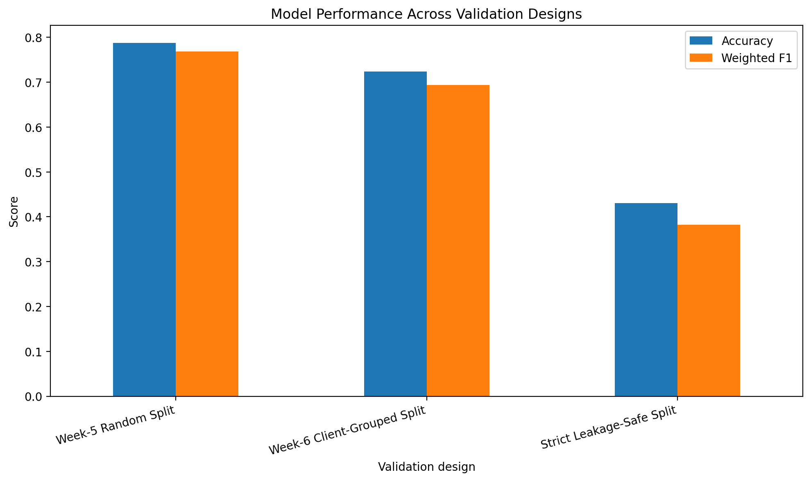
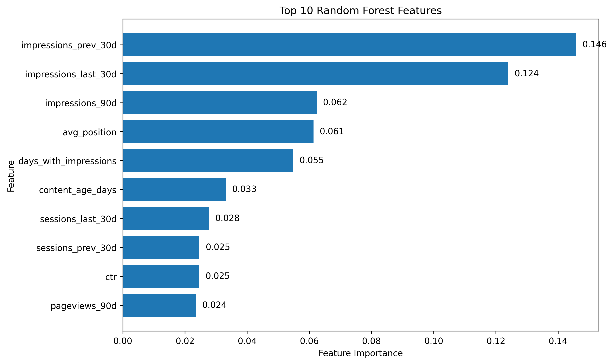
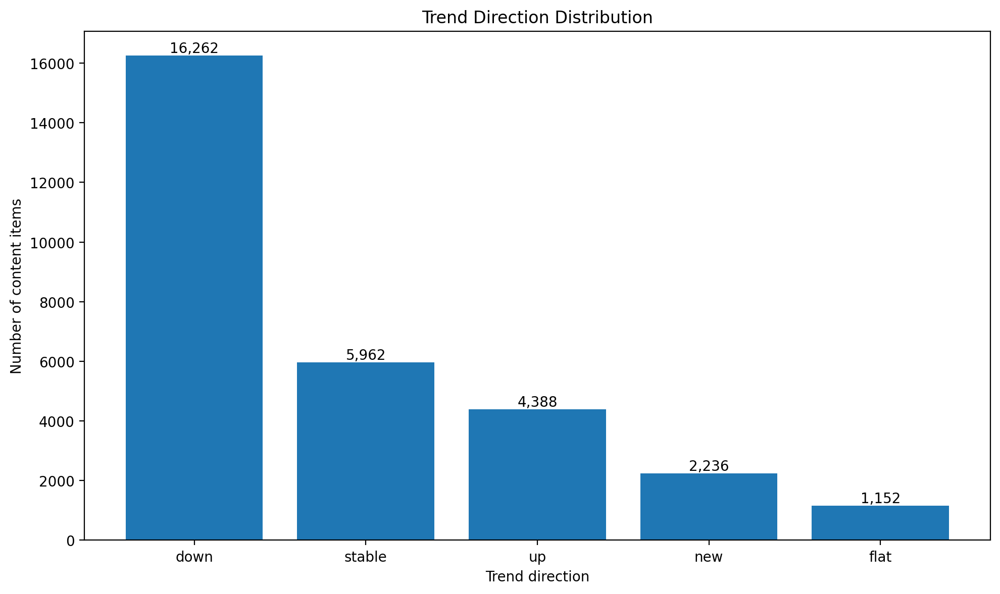

Abstract
1. Introduction / Problem
Content teams often have more pages to review than they can realistically inspect at the same time. The practical question is therefore not simply whether a page is performing well or poorly, but which pages should receive attention first.
This project studies whether observable search and content signals can be combined into a repeatable ranking system for that review decision.
The unit of analysis is an individual content item. The output is a ranked action queue containing an action, reason code, and score. A human editor reviews the highest-ranked items and decides whether a refresh, monitoring action, or no action is appropriate.
A wrong call has a real opportunity cost: editorial time can be spent refreshing content that did not require intervention, while genuinely useful review candidates could be delayed.
2. Data
The analysis uses the anonymized FlyRank ML Internship dataset. The available data contains search visibility, traffic, engagement, content characteristics, and trend-related fields.
The target distribution contains five observed trend categories: down, stable, up, new, and flat.
| Trend direction | Observed items |
|---|---|
| down | 16,262 |
| stable | 5,962 |
| up | 4,388 |
| new | 2,236 |
| flat | 1,152 |
Client and content identifiers were retained only where needed for
grouping and traceability during analysis. They were excluded from
model features. The target fields trend_direction and
trend_pct were also excluded from the feature set.
3. Methodology
Target
The classification target is the observed
trend_direction category associated with each content
item.
Features
The model uses measurable content, search, traffic, engagement, freshness, and visibility signals.
- search_volume
- competition
- cpc
- content_type
- main_intent
- word_count
- char_count
- impressions_90d
- clicks_90d
- pageviews_90d
- sessions_90d
- users_90d
- engaged_sessions_90d
- ai_sessions_90d
- scroll_events_90d
- days_with_impressions
- days_with_sessions
- impressions_last_30d
- clicks_last_30d
- sessions_last_30d
- impressions_prev_30d
- clicks_prev_30d
- sessions_prev_30d
- content_age_days
- days_since_last_update
- ctr
- avg_position
- engagement_rate
- scroll_rate
- ai_traffic_pct
Excluded fields
trend_direction and trend_pct were excluded
because they are directly related to the target. content_id
and client_id were excluded because they are identifiers,
not meaningful predictive content features.
Models
Logistic Regression was used as a readable first learned model. Random Forest was then evaluated as a stronger nonlinear model. The final action queue uses the Random Forest output because it provided stronger measured classification performance.
Validation
The original Week-5 evaluation used a random split. Week-6 added a stricter client-grouped validation design, where complete clients were separated between training and testing.
The grouped evaluation used 25 training clients and 7 testing clients, with zero client overlap.
4. Results
The most important evaluation finding is that validation design changes the measured result. The random split produced a higher score, while holding out complete clients produced a more conservative estimate.
| Validation design | Accuracy | Weighted F1 |
|---|---|---|
| Week-5 random split | 78.75% | 76.82% |
| Week-6 client-grouped split | 72.40% | 69.35% |

Figure 1. Model performance under the original random split and the stricter client-grouped validation design.
The decrease from 78.75% to 72.40% accuracy shows why the grouped validation result is the more useful headline when discussing generalization to unseen clients.
Feature importance
Random Forest feature importance provides a directional view of which measured variables contributed most to the fitted model. The strongest features were related primarily to recent and historical visibility.

Figure 2. The ten highest Random Forest feature importance values in the evaluated model.
| Feature | Importance |
|---|---|
| impressions_prev_30d | 0.146 |
| impressions_last_30d | 0.124 |
| impressions_90d | 0.062 |
| avg_position | 0.061 |
| days_with_impressions | 0.055 |
These importance values should be interpreted as model behavior, not causal effects. They indicate which features were useful to the fitted Random Forest, not that changing a feature will cause a particular outcome.
Observed trend distribution

Figure 3. Distribution of the observed trend-direction categories in the evaluated dataset.
5. Limitations & Honest Framing
The random-split result was stronger than the client-grouped result. This difference demonstrates that the evaluation design matters and that the random-split score should not be treated as evidence of universal performance.
The client-grouped result of 72.40% accuracy and 69.35% weighted F1 is a more conservative indication of how the evaluated model behaved when complete clients were held out.
The model should therefore be understood as a decision-support ranking system, not an automated content editor, a guarantee of future traffic, or a model of Google's ranking algorithm.
Feature importance is also not causal evidence. In addition, the target distribution is imbalanced, with the `down` category representing the largest observed class. Accuracy therefore needs to be interpreted together with class-level metrics and validation design.
6. Ranked Recommendations
The final output converts model scores into a practical editorial review queue. The queue is intended to reduce the amount of manual searching required to decide which content should be inspected first.
Declining + high visibility
Review content with a strong measured probability of the
down category combined with meaningful visibility.
These items receive the reason code
DECLINING_HIGH_VISIBILITY.
Declining content with lower visibility
Review lower-visibility declining items when editorial capacity allows. Their potential value is less established by the available measurements.
Stable, new, flat, or uncertain items
Monitoring is preferable to immediate intervention when the measured evidence does not clearly justify a content change.
Human review rule
A model score alone should never trigger an automatic content change. Before refreshing a page, an editor should inspect its current content, search intent, freshness, visibility, and other relevant context.
No-go cases
- Do not automatically rewrite or delete content from the model output.
- Do not interpret model probability as causal evidence.
- Do not claim that the system predicts Google's ranking algorithm.
- Do not treat a single score as sufficient evidence for a content decision.
- Do not use client identifiers as predictive features.
7. Reproducibility
The analysis was developed as a sequence of executable notebooks
under the repository's work/notebooks/ directory.
Random seeds were fixed at 42 for the model and validation
experiments described here.
The repository also contains the working notebooks, analysis artifacts, and report used to construct this page.
8. Acknowledgments & Data Credit
This project was completed as part of the FlyRank ML Internship. The analysis is built on the anonymized FlyRank ML Internship dataset.
Data source: FlyRank
The dataset and analysis are used for research and educational purposes within the internship framework. Public-facing results intentionally avoid client-identifying information and private search data.
Conclusion
The central result is not simply that the Random Forest achieved a particular accuracy. The more important finding is that the measured performance changed when the validation design became more realistic for unseen clients.
The resulting model can therefore be useful as a prioritization layer: it helps identify content that deserves human inspection, while the final editorial decision remains with a reviewer.